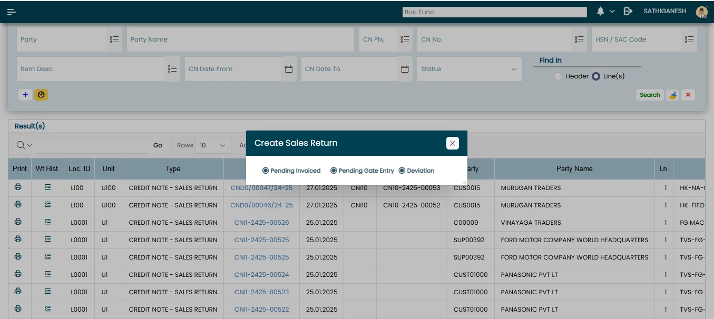
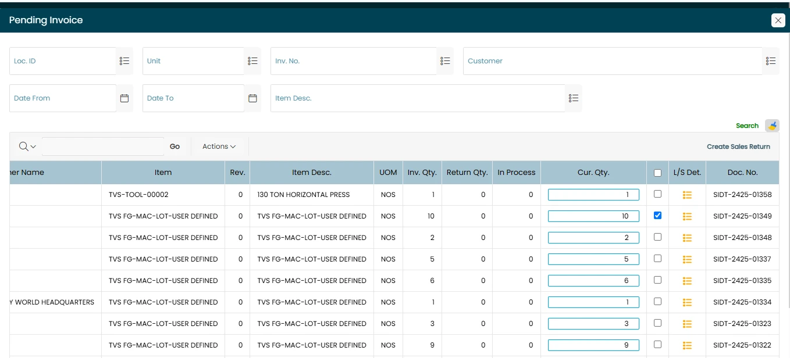
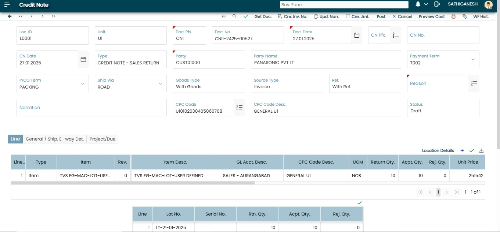

<div data-category="Financials" data-title="Credit Note" data-updated="December 01, 2025" data-contributors="RoadmapIT" data-breadcrumb="Home,Financials,Credit Note">
  <div class="page-content">
    <p>A credit note is a document that is issued by a seller to a buyer when the seller owes the buyer money. A credit note can be used to correct a mistake in an invoice, to refund a payment, to cancel an order, or to adjust a price.</p>
    <p>This screen helps user to create a Credit note, which is raised against the expense account by selecting the document type as “Credit note” and the prefix will be created for the same.</p>
    <h5>Navigation path:</h5>
    <p class="fs-6">Financial \ Transactions \ Party Document \ Credit Note</p>
    
    <ul style="list-style-type: none; align-content: center">
      <li class="mouse-icon">Click the Create credit Note button.</li>
      <li class="mouse-icon">The below types of Credit note can be created by pending button.</li>
    </ul>
    <ol class="my-2">
      <li style="display: list-item; list-style-type: circle">Pending Invoice</li>
      <li style="display: list-item; list-style-type: circle">Pending Gate entry</li>
      <li style="display: list-item; list-style-type: circle">Deviation</li>
    </ol>
    
    <ul style="list-style-type: none; align-content: center">
      <li class="mouse-icon">Click the appropriate button to create Sales Return.</li>
    </ul>
    
    <ul style="list-style-type: none; align-content: center">
      <li class="mouse-icon">Select the documents and click Create Sales Return button.</li>
      <li class="mouse-icon">Select the date and Click Ok.</li>
    </ul>
    
    <ul style="list-style-type: none; align-content: center">
      <li class="mouse-icon">Enter the CNI Prefix.</li>
      <li class="mouse-icon">Enter the Reason and Narration.</li>
      <li class="mouse-icon">Click <i class="bi bi-check-lg fs-4 mx-2 text-success"></i> to Save the header.</li>
      <li class="mouse-icon">If creating directly by clicking <i class="bi bi-plus fs-4 mx-2 text-primary"></i> button in the find screen.</li>
      <li class="mouse-icon">If document is to be created with Goods, then in Line select Type as Item or charges.</li>
      <li class="mouse-icon">Enter the Item and associate GL Account of the Item.</li>
      <li class="mouse-icon">Click <i class="bi bi-check-lg fs-4 mx-2 text-success"></i> to Save.</li>
      <li class="mouse-icon">Click on create journal.</li>
      <li class="mouse-icon">Press the post button to complete the entry and the document can be forwarded to approval.</li>
    </ul>
  </div>
</div>
